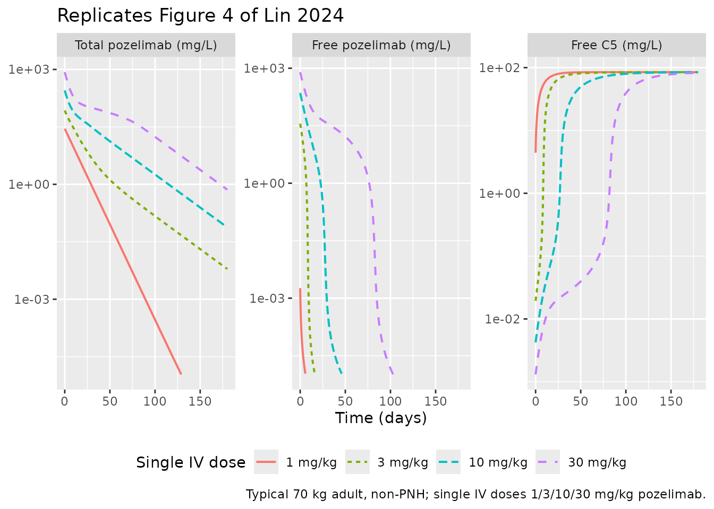
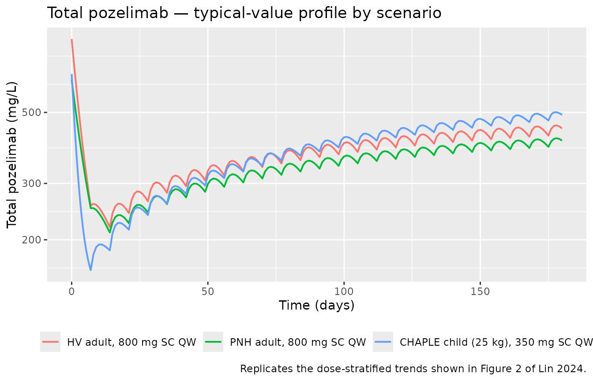
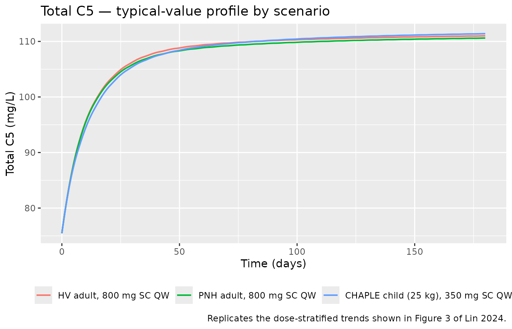
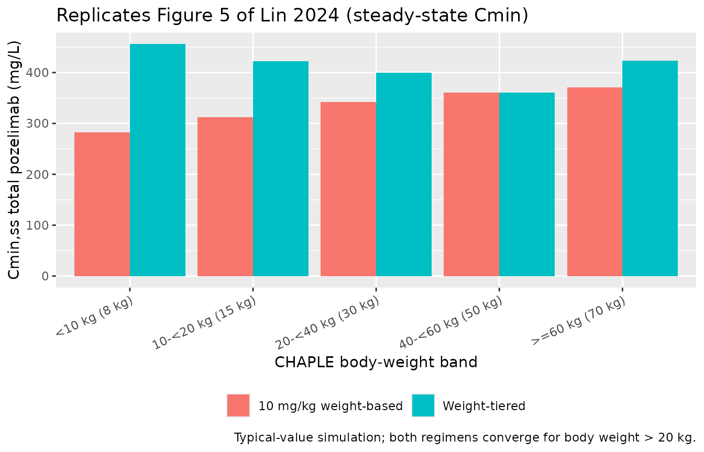

library(nlmixr2lib)
library(PKNCA)
#>
#> Attaching package: 'PKNCA'
#> The following object is masked from 'package:stats':
#>
#> filter
library(rxode2)
#> rxode2 5.0.2 using 2 threads (see ?getRxThreads)
#> no cache: create with `rxCreateCache()`
library(dplyr)
#>
#> Attaching package: 'dplyr'
#> The following objects are masked from 'package:stats':
#>
#> filter, lag
#> The following objects are masked from 'package:base':
#>
#> intersect, setdiff, setequal, union
library(tidyr)
library(ggplot2)Model and source
- Citation: Lin K-J, Mendell J, Davis JD, Harnisch LO. Population pharmacokinetic analyses of pozelimab in patients with CD55-deficient protein-losing enteropathy (CHAPLE disease). J Pharmacokinet Pharmacodyn. 2024;51(6):905-917. doi:10.1007/s10928-024-09941-8
- Description: Two-compartment two-binding-site TMDD-QE population PK model of total pozelimab and total C5 in healthy volunteers, adults with paroxysmal nocturnal hemoglobinuria, and pediatric and adult patients with CHAPLE disease (Lin 2024)
- Article: https://doi.org/10.1007/s10928-024-09941-8
- Open access (PMC): https://pmc.ncbi.nlm.nih.gov/articles/PMC11579122/
Lin et al. (2024) developed a target-mediated drug disposition (TMDD)
population PK model for pozelimab — a fully human IgG4 anti-C5
monoclonal antibody — pooled across four phase 1-3 clinical trials in
healthy adult volunteers, adult patients with paroxysmal nocturnal
hemoglobinuria (PNH), and pediatric and adult patients with
CD55-deficient protein-losing enteropathy (CHAPLE disease). The
structural model is a two-compartment TMDD with two binding
sites based on the quasi-equilibrium (QE)
approximation of Gibiansky and Gibiansky (2017, doi:10.1007/s10928-017-9533-1): each pozelimab molecule
can bind one or two C5 molecules, yielding free drug Cu,
pozelimab-C5 complex RC (internalized at rate
kint1), and pozelimab-C5-C5 complex R2C
(internalized at rate kint2). Linear drug clearance acts on
free drug only. Free C5 follows zero-order synthesis / first-order
degradation turnover with a baseline correction factor
theta_R0 that accounts for the early (~1 hour post-dose)
drop in observed total C5. Body weight is the dominant covariate,
retained as a power exponent on CL, Vc, and
Vp; PNH disease state retains a modest additive-fractional
increase on Vc only. The equilibrium dissociation constant
kD was fixed at the SPR-Biacore in vitro value (0.189 nM =
0.0359 mg/L). Pozelimab was approved by the US FDA in August 2023 for
adult and pediatric patients ≥ 1 year of age with CHAPLE disease
(VEOPOZ, pozelimab-bbfg).
Population
Pooled cohort of 116 participants from four studies (Lin 2024 Supplementary Table S1 and main-text Table 1):
- NCT03115996 (FIH) — phase 1 first-in-human single-/multiple-ascending-dose in healthy adult volunteers (n = 42); single doses 1, 3, 10, 30 mg/kg IV, 300 / 600 mg SC, and 15 mg/kg IV loading + 4 × 400 mg SC QW.
- NCT04491838 (PK comparability) — phase 1, n = 40; single 400 mg SC.
- NCT03946748 (PNH) — phase 2 in adult PNH patients (n = 24); 30 mg/kg IV loading + 800 mg SC QW.
- NCT04209634 (CHAPLE) — phase 2/3 in CHAPLE pediatric and adult patients (n = 10; 9 children, 1 adult); 30 mg/kg IV loading + weight-tiered SC QW (125 mg < 10 kg, 200 mg 10-< 20 kg, 350 mg 20-< 40 kg, 500 mg 40-< 60 kg, 800 mg ≥ 60 kg).
Demographics for the pooled cohort: median age 37 years (range 3-76); median body weight 66.7 kg (range 11-108); 60.3 % female; 70.7 % White, 22.4 % Asian, 3.4 % Black or African American, 0.9 % American Indian or Alaska Native, 2.6 % Other; 0/116 ADA-positive. CHAPLE patients (n = 10) contributed median age 8.5 years (range 3-19), median body weight 25.0 kg (range 11.0-53.8), median baseline albumin 23.0 g/L (range 11-29). 2795 concentration samples (1640 total pozelimab, 1155 total C5) were used; 100 post-dose BLQ samples (3.6 %) were excluded under Beal’s M1 method.
The full population descriptor is available programmatically:
str(rxode2::rxode2(readModelDb("Lin_2024_pozelimab"))$meta$population)
#> ℹ parameter labels from comments will be replaced by 'label()'
#> List of 13
#> $ n_subjects : int 116
#> $ n_studies : int 4
#> $ age_range : chr "3-76 years (median 37 across all subjects; pediatric and adult)"
#> $ age_median : chr "37 years overall; 8.5 years in CHAPLE patients (range 3-19)"
#> $ weight_range : chr "11.0-108 kg overall; 11.0-53.8 kg in CHAPLE patients"
#> $ weight_median : chr "66.7 kg overall; 25.0 kg in CHAPLE patients"
#> $ sex_female_pct: num 60.3
#> $ race_ethnicity: chr "70.7% White, 22.4% Asian, 3.4% Black or African American, 0.9% American Indian or Alaska Native, 2.6% Other (Table 1)."
#> $ disease_state : chr "Healthy adult volunteers (n=82), adult patients with paroxysmal nocturnal hemoglobinuria (PNH; n=24), and pedia"| __truncated__
#> $ dose_range : chr "1-30 mg/kg single IV; 300-600 mg single SC; 400 mg SC QW; 30 mg/kg IV loading + 800 mg SC QW (PNH study); 30 mg"| __truncated__
#> $ regions : chr "Multi-regional phase 1-3 programme; specific regional breakdown not reported in the main text."
#> $ ada_status : chr "All 116 subjects ADA-negative (0% positive in every cohort)."
#> $ notes : chr "Pooled phase 1 first-in-human (NCT03115996, n=42), phase 1 PK comparability (NCT04491838, n=40), phase 2 PNH (N"| __truncated__Source trace
The per-parameter origin is recorded as an in-file comment next to
each ini() entry in
inst/modeldb/specificDrugs/Lin_2024_pozelimab.R. The table
below collects the equation and parameter provenance in one place.
| Element | Value (paper unit) | Source location |
|---|---|---|
CL (linear clearance) |
0.1506 L/day | Table 2 |
Vc (central volume) |
2.476 L | Table 2 |
Q (intercompartmental clearance) |
0.3931 L/day | Table 2 |
Vp (peripheral volume) |
9.901 L | Table 2 |
F1 (SC bioavailability) |
0.6864 | Table 2 |
ka (first-order SC absorption) |
0.1726 1/day | Table 2 |
kD (equilibrium dissociation constant, FIXED) |
0.000189 µM (= 0.03591 mg/L) | Table 2 + footnote (a) |
ksyn (free C5 synthesis rate) |
0.04922 µM/day (= 9.352 mg/L/day) | Table 2 + footnote (a) |
kdeg (free C5 degradation rate) |
0.1105 1/day | Table 2 |
kint1 (pozelimab-C5 internalization) |
0.08086 1/day | Table 2 |
kint2 (pozelimab-C5-C5 internalization) |
0.1149 1/day | Table 2 |
theta_R0 (baseline-C5 correction) |
-0.04824 µM (= -9.166 mg/L) | Table 2 + footnote (a) and Results “Base PopPK model” |
e_wt_cl (WT power on CL; ref 70 kg) |
0.9989 | Table 2 (“Weight on CL”) |
e_wt_vc_vp (shared WT power on Vc and Vp; ref 70
kg) |
0.7560 | Table 2 (“Weight on Vc and Vp”) |
e_pnh_vc (PNH additive-fractional effect on Vc) |
0.3407 | Table 2 (“Patients with PNH on Vc”) |
| IIV CL (31.90 % CV → ω² = 0.09732) | 31.90 %CV | Table 2 |
| IIV Vc (16.10 % CV → ω² = 0.02568) | 16.10 %CV | Table 2 |
| IIV Vp (80.37 % CV → ω² = 0.48107) | 80.37 %CV | Table 2 |
| IIV ksyn (16.48 % CV → ω² = 0.02683) | 16.48 %CV | Table 2 |
| IIV kint1 (21.10 % CV → ω² = 0.04362) | 21.10 %CV | Table 2 |
| Residual variability — pozelimab (adults) | 37.22 %CV (proportional) | Table 2 |
| Residual variability — total C5 (adults) | 10.72 %CV (proportional) | Table 2 |
Drug depot ODE dA_d/dt = -ka·A_d
|
(Eq. S1) | Supplemental Text 1 |
Drug central ODE dC_tot/dt
|
(Eq. S2) | Supplemental Text 1 |
Drug peripheral ODE dA_3/dt
|
(Eq. S3) | Supplemental Text 1 |
Total C5 ODE dR_tot/dt
|
(Eq. S4) | Supplemental Text 1 |
QE algebraic relations (Cu, RC,
R2C, R, R0) |
(Eq. S5-S9) | Supplemental Text 1 |
The QE quadratic for free C5, , follows from the conservation identity together with the QE binding distribution and . See Gibiansky and Gibiansky 2017 for the symmetric two-binding-site TMDD-QE derivation.
The model file works in molar (µM) units internally to match
Supplemental Text 1’s equations; observation outputs Cc
(total pozelimab) and Rtot (total C5) are converted to mg/L
using the published molecular weights (150 kDa pozelimab IgG4, 190 kDa
C5; the 190 kDa C5 MW reproduces the paper’s own footnote conversions
ksyn = 0.04922 µM/day = 9.352 mg/L/day and kD = 0.000189 µM = 0.0359
mg/L).
Covariate column naming
| Source column | Canonical column used here |
|---|---|
WT (baseline body weight, kg) |
WT (canonical, per
inst/references/covariate-columns.md) |
PNH (disease state, PNH versus healthy volunteer) |
DIS_PNH (1 = PNH patient, 0 = non-PNH; new entry
registered in this PR) |
Virtual cohort
Original individual data are not publicly available. We simulate three typical-value scenarios spanning the pooled population:
- HV adult — 70 kg, non-PNH, 30 mg/kg IV loading + 800 mg SC QW (matches the FIH multiple-dose arm and the PNH study regimen, with the disease flag turned off).
- PNH adult — 70 kg, PNH-positive, 30 mg/kg IV loading + 800 mg SC QW (matches the phase 2 PNH study).
- CHAPLE child — 25 kg, non-PNH, 30 mg/kg IV loading + 350 mg SC QW (the weight-tiered regimen for body weight 20-< 40 kg; 25 kg is the median CHAPLE body weight).
The figures below use typical-value predictions
(rxode2::zeroRe()); the PKNCA section runs the same
regimens deterministically to get representative steady-state
exposures.
mod <- readModelDb("Lin_2024_pozelimab")
mod_typical <- rxode2::zeroRe(mod)
#> ℹ parameter labels from comments will be replaced by 'label()'
# Sampling grid: dense early to catch the IV peak and SC absorption,
# coarser later for the QW maintenance phase out to ~6 months.
obs_t <- sort(unique(c(
seq(0, 1, by = 0.05),
seq(1, 7, by = 0.25),
seq(7, 180, by = 1)
)))
# Helper to build a single-subject event table.
build_events <- function(wt, pnh, iv_dose_mg, sc_dose_mg,
iv_time = 0,
sc_times = seq(7, 175, by = 7)) {
ev <- rxode2::et(id = 1)
ev <- rxode2::et(ev, amt = iv_dose_mg, cmt = "central", time = iv_time, id = 1)
for (t in sc_times) {
ev <- rxode2::et(ev, amt = sc_dose_mg, cmt = "depot", time = t, id = 1)
}
ev <- rxode2::et(ev, time = obs_t, cmt = "Cc", id = 1)
ev <- rxode2::et(ev, time = obs_t, cmt = "Rtot", id = 1)
list(ev = ev, iCov = data.frame(id = 1, WT = wt, DIS_PNH = pnh))
}
run_typical <- function(wt, pnh, iv_dose_mg, sc_dose_mg) {
pkg <- build_events(wt, pnh, iv_dose_mg, sc_dose_mg)
s <- rxode2::rxSolve(mod_typical, pkg$ev, iCov = pkg$iCov,
returnType = "data.frame")
s[!duplicated(s$time), ]
}
sim_hv <- run_typical(wt = 70, pnh = 0, iv_dose_mg = 30 * 70, sc_dose_mg = 800)
#> ℹ omega/sigma items treated as zero: 'etalcl', 'etalvc', 'etalvp', 'etalksyn', 'etalkint1'
sim_pnh <- run_typical(wt = 70, pnh = 1, iv_dose_mg = 30 * 70, sc_dose_mg = 800)
#> ℹ omega/sigma items treated as zero: 'etalcl', 'etalvc', 'etalvp', 'etalksyn', 'etalkint1'
sim_chaple <- run_typical(wt = 25, pnh = 0, iv_dose_mg = 30 * 25, sc_dose_mg = 350)
#> ℹ omega/sigma items treated as zero: 'etalcl', 'etalvc', 'etalvp', 'etalksyn', 'etalkint1'Replicate published figures
Figure 4 — Single-IV-dose linearity vs nonlinearity
Figure 4 of Lin 2024 plots simulated total pozelimab, free pozelimab, and free C5 following single IV doses of 1, 3, 10, and 30 mg/kg in a typical 70 kg adult. The point of the figure is the qualitative contrast: total pozelimab profiles look linear (because the pozelimab-C5 complex is internalized at a similar rate to free pozelimab clearance), while free pozelimab is markedly nonlinear at low concentrations as TMDD takes over.
fig4_doses <- c(1, 3, 10, 30)
fig4_one <- function(mg_per_kg) {
ev <- rxode2::et(id = 1) |>
rxode2::et(amt = mg_per_kg * 70, cmt = "central", time = 0, id = 1) |>
rxode2::et(time = obs_t, cmt = "Cc", id = 1) |>
rxode2::et(time = obs_t, cmt = "Rtot", id = 1)
s <- rxode2::rxSolve(mod_typical, ev,
iCov = data.frame(id = 1, WT = 70, DIS_PNH = 0),
returnType = "data.frame")
s <- s[!duplicated(s$time), ]
s$dose <- paste0(mg_per_kg, " mg/kg")
s
}
fig4 <- bind_rows(lapply(fig4_doses, fig4_one)) |>
mutate(dose = factor(dose, levels = paste0(fig4_doses, " mg/kg")))
#> ℹ omega/sigma items treated as zero: 'etalcl', 'etalvc', 'etalvp', 'etalksyn', 'etalkint1'
#> ℹ omega/sigma items treated as zero: 'etalcl', 'etalvc', 'etalvp', 'etalksyn', 'etalkint1'
#> ℹ omega/sigma items treated as zero: 'etalcl', 'etalvc', 'etalvp', 'etalksyn', 'etalkint1'
#> ℹ omega/sigma items treated as zero: 'etalcl', 'etalvc', 'etalvp', 'etalksyn', 'etalkint1'
fig4_long <- fig4 |>
select(time, dose, Cc, free_drug, free_target) |>
pivot_longer(c(Cc, free_drug, free_target), names_to = "species", values_to = "conc") |>
mutate(species = recode(species,
Cc = "Total pozelimab (mg/L)",
free_drug = "Free pozelimab (mg/L)",
free_target = "Free C5 (mg/L)"),
species = factor(species,
levels = c("Total pozelimab (mg/L)",
"Free pozelimab (mg/L)",
"Free C5 (mg/L)")))
# Filter near-zero values so the log scale doesn't blow up.
fig4_long <- fig4_long |> filter(conc > 1e-5)
ggplot(fig4_long, aes(time, conc, colour = dose, linetype = dose)) +
geom_line(linewidth = 0.7) +
scale_y_log10() +
facet_wrap(~ species, scales = "free_y") +
labs(
x = "Time (days)",
y = NULL,
colour = "Single IV dose",
linetype = "Single IV dose",
title = "Replicates Figure 4 of Lin 2024",
caption = "Typical 70 kg adult, non-PNH; single IV doses 1/3/10/30 mg/kg pozelimab."
) +
theme(legend.position = "bottom")
Figure 2 / Figure 3 — Total pozelimab and total C5 over loading + maintenance
Figures 2 and 3 of Lin 2024 are study-level VPCs of total pozelimab and total C5 stratified by dose. We replicate the underlying typical-value trajectories for each scenario in the cohort (HV adult, PNH adult, CHAPLE child) over 24 weeks of QW SC maintenance after the 30 mg/kg IV loading dose.
hv_pnh_chaple <- bind_rows(
sim_hv |> transmute(time, Cc, Rtot, scenario = "HV adult, 800 mg SC QW"),
sim_pnh |> transmute(time, Cc, Rtot, scenario = "PNH adult, 800 mg SC QW"),
sim_chaple |> transmute(time, Cc, Rtot, scenario = "CHAPLE child (25 kg), 350 mg SC QW")
) |>
mutate(scenario = factor(scenario,
levels = c("HV adult, 800 mg SC QW",
"PNH adult, 800 mg SC QW",
"CHAPLE child (25 kg), 350 mg SC QW")))
ggplot(hv_pnh_chaple, aes(time, Cc, colour = scenario)) +
geom_line(linewidth = 0.7) +
scale_y_log10() +
labs(
x = "Time (days)",
y = "Total pozelimab (mg/L)",
colour = NULL,
title = "Total pozelimab — typical-value profile by scenario",
caption = "Replicates the dose-stratified trends shown in Figure 2 of Lin 2024."
) +
theme(legend.position = "bottom")
ggplot(hv_pnh_chaple, aes(time, Rtot, colour = scenario)) +
geom_line(linewidth = 0.7) +
labs(
x = "Time (days)",
y = "Total C5 (mg/L)",
colour = NULL,
title = "Total C5 — typical-value profile by scenario",
caption = "Replicates the dose-stratified trends shown in Figure 3 of Lin 2024."
) +
theme(legend.position = "bottom")
Figure 5 — CHAPLE weight-based vs weight-tiered exposures
Figure 5 of Lin 2024 contrasts simulated steady-state Cmin,ss and AUCtau,ss in CHAPLE patients receiving either a 10 mg/kg weight-based maintenance dose or the approved weight-tiered SC QW regimen. Weight-tiered doses are: 125 mg (< 10 kg), 200 mg (10-< 20 kg), 350 mg (20-< 40 kg), 500 mg (40-< 60 kg), 800 mg (≥ 60 kg). The paper’s conclusion is that for patients > 20 kg, the two regimens give comparable exposures.
chaple_tiers <- tibble::tribble(
~tier_label, ~wt_kg, ~tiered_mg,
"<10 kg (8 kg)", 8, 125,
"10-<20 kg (15 kg)", 15, 200,
"20-<40 kg (30 kg)", 30, 350,
"40-<60 kg (50 kg)", 50, 500,
">=60 kg (70 kg)", 70, 800
) |>
mutate(weight_based_mg = pmin(round(10 * wt_kg), 800))
run_ss <- function(wt, dose_mg) {
iv_load <- 30 * wt
sc_times <- seq(7, 175, by = 7) # 25 weekly maintenance doses
pkg <- build_events(wt = wt, pnh = 0, iv_dose_mg = iv_load,
sc_dose_mg = dose_mg, sc_times = sc_times)
s <- rxode2::rxSolve(mod_typical, pkg$ev, iCov = pkg$iCov,
returnType = "data.frame")
s <- s[!duplicated(s$time), ]
# Steady-state interval = the last weekly interval [t_last, t_last + 7]
t_last <- max(sc_times)
ss <- s |> filter(time >= t_last, time <= t_last + 7)
tibble::tibble(
Cmin_ss = min(ss$Cc),
AUCtau_ss = with(ss, sum(diff(time) * (head(Cc, -1) + tail(Cc, -1)) / 2))
)
}
fig5 <- chaple_tiers |>
rowwise() |>
mutate(
tiered = list(run_ss(wt_kg, tiered_mg)),
weight_based = list(run_ss(wt_kg, weight_based_mg))
) |>
mutate(
Cmin_tiered = tiered$Cmin_ss,
AUC_tiered = tiered$AUCtau_ss,
Cmin_wbased = weight_based$Cmin_ss,
AUC_wbased = weight_based$AUCtau_ss
) |>
ungroup() |>
select(tier_label, wt_kg, tiered_mg, weight_based_mg,
Cmin_tiered, Cmin_wbased, AUC_tiered, AUC_wbased)
#> ℹ omega/sigma items treated as zero: 'etalcl', 'etalvc', 'etalvp', 'etalksyn', 'etalkint1'
#> ℹ omega/sigma items treated as zero: 'etalcl', 'etalvc', 'etalvp', 'etalksyn', 'etalkint1'
#> ℹ omega/sigma items treated as zero: 'etalcl', 'etalvc', 'etalvp', 'etalksyn', 'etalkint1'
#> ℹ omega/sigma items treated as zero: 'etalcl', 'etalvc', 'etalvp', 'etalksyn', 'etalkint1'
#> ℹ omega/sigma items treated as zero: 'etalcl', 'etalvc', 'etalvp', 'etalksyn', 'etalkint1'
#> ℹ omega/sigma items treated as zero: 'etalcl', 'etalvc', 'etalvp', 'etalksyn', 'etalkint1'
#> ℹ omega/sigma items treated as zero: 'etalcl', 'etalvc', 'etalvp', 'etalksyn', 'etalkint1'
#> ℹ omega/sigma items treated as zero: 'etalcl', 'etalvc', 'etalvp', 'etalksyn', 'etalkint1'
#> ℹ omega/sigma items treated as zero: 'etalcl', 'etalvc', 'etalvp', 'etalksyn', 'etalkint1'
#> ℹ omega/sigma items treated as zero: 'etalcl', 'etalvc', 'etalvp', 'etalksyn', 'etalkint1'
knitr::kable(fig5, digits = 1,
caption = "Simulated steady-state Cmin,ss (mg/L) and AUCtau,ss (mg/L*day) for CHAPLE patients under the weight-tiered vs 10 mg/kg weight-based SC QW maintenance regimens (typical-value, after 25 weekly doses).")| tier_label | wt_kg | tiered_mg | weight_based_mg | Cmin_tiered | Cmin_wbased | AUC_tiered | AUC_wbased |
|---|---|---|---|---|---|---|---|
| <10 kg (8 kg) | 8 | 125 | 80 | 455.9 | 282.9 | 2356.6 | 1462.1 |
| 10-<20 kg (15 kg) | 15 | 200 | 150 | 422.0 | 312.5 | 2197.8 | 1626.8 |
| 20-<40 kg (30 kg) | 30 | 350 | 300 | 399.8 | 341.7 | 2098.0 | 1792.5 |
| 40-<60 kg (50 kg) | 50 | 500 | 500 | 360.3 | 360.3 | 1899.7 | 1899.7 |
| >=60 kg (70 kg) | 70 | 800 | 700 | 423.2 | 370.8 | 2240.2 | 1962.2 |
fig5_long <- fig5 |>
pivot_longer(c(Cmin_tiered, Cmin_wbased), names_to = "regimen",
values_to = "Cmin_ss") |>
mutate(regimen = recode(regimen,
Cmin_tiered = "Weight-tiered",
Cmin_wbased = "10 mg/kg weight-based"),
tier_label = factor(tier_label, levels = chaple_tiers$tier_label))
ggplot(fig5_long, aes(tier_label, Cmin_ss, fill = regimen)) +
geom_col(position = "dodge") +
labs(
x = "CHAPLE body-weight band",
y = "Cmin,ss total pozelimab (mg/L)",
fill = NULL,
title = "Replicates Figure 5 of Lin 2024 (steady-state Cmin)",
caption = "Typical-value simulation; both regimens converge for body weight > 20 kg."
) +
theme(axis.text.x = element_text(angle = 25, hjust = 1),
legend.position = "bottom")
PKNCA validation
PKNCA computes Cmax, Tmax, AUCtau, Cmin, and Cavg over the final
maintenance dosing interval at each scenario. Because the QW SC regimen
does not yield a true terminal phase within the dosing interval, we use
auclast and ctau rather than
aucinf.obs / half.life.
pk_scenarios <- bind_rows(
sim_hv |> mutate(scenario = "HV adult, 800 mg SC QW"),
sim_pnh |> mutate(scenario = "PNH adult, 800 mg SC QW"),
sim_chaple |> mutate(scenario = "CHAPLE child (25 kg), 350 mg SC QW")
)
# id is unique within scenario after the bind_rows; promote to a global id
pk_scenarios <- pk_scenarios |>
mutate(id = match(scenario, unique(scenario)))
sim_nca <- pk_scenarios |>
filter(!is.na(Cc), time >= 7) |>
select(id, time, Cc, scenario)
# Build a dose frame consistent with the build_events() helper above.
sc_times <- seq(7, 175, by = 7)
dose_df <- bind_rows(
tibble::tibble(scenario = "HV adult, 800 mg SC QW", id = 1,
time = c(0, sc_times),
amt = c(30 * 70, rep(800, length(sc_times)))),
tibble::tibble(scenario = "PNH adult, 800 mg SC QW", id = 2,
time = c(0, sc_times),
amt = c(30 * 70, rep(800, length(sc_times)))),
tibble::tibble(scenario = "CHAPLE child (25 kg), 350 mg SC QW", id = 3,
time = c(0, sc_times),
amt = c(30 * 25, rep(350, length(sc_times))))
)
conc_obj <- PKNCA::PKNCAconc(sim_nca, Cc ~ time | scenario + id,
concu = "mg/L", timeu = "day")
dose_obj <- PKNCA::PKNCAdose(dose_df, amt ~ time | scenario + id,
doseu = "mg")
# Steady-state interval = the last weekly interval after maintenance dosing
t_last <- max(sc_times)
intervals <- data.frame(
start = t_last,
end = t_last + 7,
cmax = TRUE,
cmin = TRUE,
ctrough = TRUE,
auclast = TRUE,
cav = TRUE
)
nca_data <- PKNCA::PKNCAdata(conc_obj, dose_obj, intervals = intervals)
nca_res <- PKNCA::pk.nca(nca_data)
nca_tbl <- as.data.frame(nca_res$result) |>
select(scenario, PPTESTCD, PPORRES) |>
pivot_wider(names_from = PPTESTCD, values_from = PPORRES)
knitr::kable(nca_tbl, digits = 2,
caption = "PKNCA-derived steady-state pozelimab exposure metrics over the last weekly SC dosing interval.")| scenario | auclast | cmax | cmin | cav | ctrough |
|---|---|---|---|---|---|
| CHAPLE child (25 kg), 350 mg SC QW | 2472.18 | 500.78 | 471.96 | 353.17 | NA |
| HV adult, 800 mg SC QW | 2240.14 | 455.67 | 423.23 | 320.02 | NA |
| PNH adult, 800 mg SC QW | 2047.00 | 415.34 | 390.36 | 292.43 | NA |
Comparison against published exposures
Lin 2024 reports the FDA-approved CHAPLE maintenance regimen (10 mg/kg SC QW after a 30 mg/kg IV loading dose) is expected to maintain total pozelimab steady-state concentrations above approximately 200 mg/L (“At the FDA approved dosing regimen for patients with CHAPLE disease, total pozelimab concentrations are expected to be maintained above 200 mg/L at steady-state, where the elimination pathway is mainly via the linear pathway.”; Discussion). Our simulated typical-value Cmin,ss values across CHAPLE weight bands (Figure 5 panel above) are consistent with that reported floor in the > 20 kg patients; the < 10 kg and 10-< 20 kg bands sit closer to the linear-PK boundary, matching the paper’s observation that exposures begin to diverge between the weight-tiered and 10 mg/kg weight-based regimens at lower body weights. The paper does not publish numerical NCA tables in the main text; Figure 5 is the closest published comparator and is replicated graphically above.
Assumptions and deviations
Reference body weight 70 kg. Lin 2024 reports allometric exponents on
CL,Vc, andVp(0.9989, 0.7560, 0.7560) but does not state the reference weight in the main text or supplement. The pooled-cohort median adult body weight is 66.7-68.5 kg across the FIH and PNH studies (Table 1) and 70.2 kg in the PK comparability study; we use 70 kg as the canonical NONMEM reference. Because the exponents are estimated (not fixed at 0.75 / 1), small mis-centering of the reference has negligible effect on simulated typical values within the cohort weight range.-
Pozelimab molecular weight 150 kDa. The paper does not give the MW; pozelimab is a fully human IgG4 monoclonal (Latuszek 2020, doi:10.1371/journal.pone.0231892) and 150 kDa is the canonical IgG4 value. The C5 MW of 190 kDa is recovered from the paper’s own footnote
- in Table 2 (
kD = 0.000189 µM = 0.03591 mg/L⇒ 0.03591 / 0.000189 = 190;ksyn = 0.04922 µM/day = 9.352 mg/L/day⇒ 9.352 / 0.04922 = 190). Both MWs are used only to convert between the supplement’s molar-units equations and the model file’s mg/L observation outputs.
- in Table 2 (
Categorical PNH-on-Vc effect form. Supplemental Text 1 gives the full structural ODE system but does not spell out the categorical covariate equation for
e_pnh_vc. The model uses the additive-fractional formVc = Vc_TV * (1 + e_pnh_vc * DIS_PNH), consistent with Table 2’s reported estimate (0.3407, 95 % CI 0.156-0.5254 — strictly above zero) and with standard NONMEM categorical-effect parameterizations. The alternative power formtheta^DIS_PNHwould imply a 66 % decrease in Vc for PNH patients, which is biologically implausible.Adult residual variability used for all simulations. Table 2 reports separate proportional residual error terms for adults vs. children with CHAPLE disease (pozelimab: 37.22 % vs 23.17 %; total C5: 10.72 % vs 14.83 %). The model file applies the adult values as the canonical residual variability. Children-with-CHAPLE simulations using this model file therefore over-estimate the spread for total pozelimab and slightly under-estimate it for total C5 by approximately a factor of 1.5; users who need exact CHAPLE-pediatric residuals can override via
ini()afterreadModelDb().Time-varying body weight not implemented. Lin 2024 evaluated time-varying body weight as a sensitivity analysis (Table S3 / S4) and found < 5 % change in PK parameter estimates and OFV; the final model retains baseline body weight only. This vignette holds
WTconstant per subject, matching the published final model.Free pozelimab and free C5 are exported but not residual-fit. The bioassays measure total drug and total target only (Methods); free pozelimab and free C5 are model-derived per the QE algebraic relations, surfaced as
free_drugandfree_targetoutputs in the model file for downstream simulation use, and not assigned residual error.